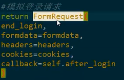
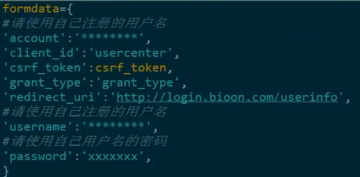
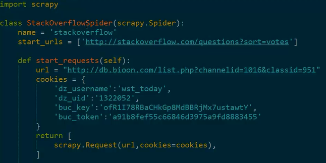
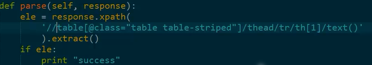

话（Session）跟踪是Web程序中常用的技术，用来跟踪用户的整个会话。常用的会话跟踪技术是Cookie与Session。
1、身份识别
①用户名
②密码
③密钥
2、web中的身份识别
①cookie通过在客户端记录信息确定用户身份,
Cookie实际上是一小段的文本信息。客户端请求服务器，如果服务器需要记录该用户状态，就使用response向客户端浏览器颁发一个Cookie。客户端浏览器会把Cookie保存起来。当浏览器再请求该网站时，浏览器把请求的网址连同该 Cookie 一同提交给服务器。 服务器检查该 Cookie，以此来辨认用户状态。服务器还可以根据需要修改Cookie的内容。
②sessionS通过在服务器端记录信息确定用户身份,
Session是另一种记录客户状态的机制，不同的是Cookie保存在客户端浏览器中，而Session保存在服务器上。客户端浏览器访问服务器的时候，服务器把客户端信息以某种形式记录在服务器上。这就是Session。客户端浏览器再次访问时只需要从该Session中查找该客户的状态就可以了。
如果说Cookie机制是通过检查客户身上的“通行证”来确定客户身份的话，那么Session机制就是通过检查服务器上的“客户明细表”来确认客户身份。Session相当于程序在服务器上建立的一份客户档案，客户来访的时候只需要查询客户档案表就可以了。
1、FormRequest 使用用户名和密码登陆
前面的内容曾经提到过：


2、添加cookie
添加cookie到Request当中
示例代码：


cookie的处理
cookies middleware1，
1、相关参数：
COOKIES_ENABLED
Default: True
Whether to enable the cookies middleware. If disabled, no cookies will be sent to web servers.
COOKIES_DEBUG
Default: False
If enabled, Scrapy will log all cookies sent in requests (ie. Cookie header) and all cookies received in responses (ie.
Set-Cookie header).
2，原理解释
This middleware enables working with sites that require cookies, such as those that use sessions. It keeps track
of cookies sent by web servers, and send them back on subsequent requests (from that spider), just like web browsers do.
1，掌握使用formRequest登录的方法；
2，掌握使用cookies模拟登录者的方法；
【本文由麦子学院独家原创，转载请注明出处并保留原文链接】